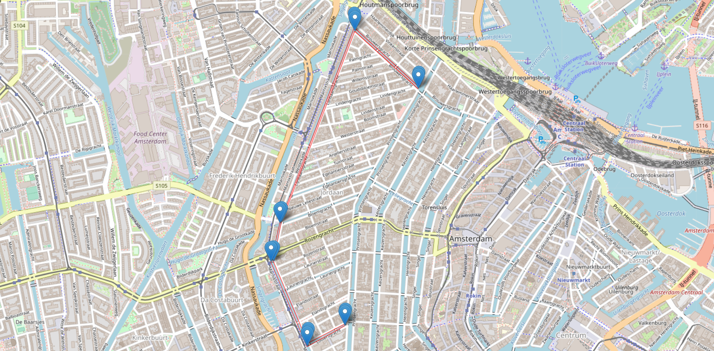
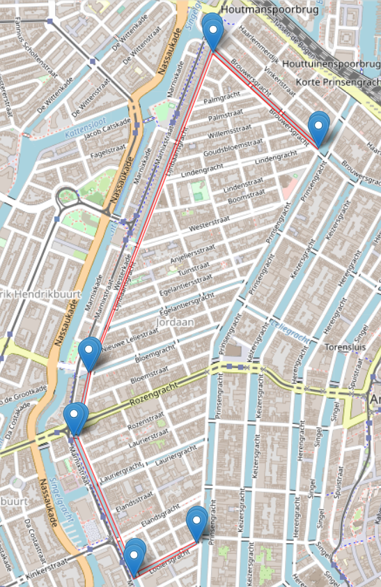

Transport
Municipal Brief
The Municipality wants you to find a location for the Event Headquarters. They decided it would be best if this E.H. is as close to the centre of the swimming route. There is a bit of a concern for the after party and the stream of visitors. They want you to quantify the number of visitors that can reach the event and the capacity for festivities after the event.
Proposed swimming route

